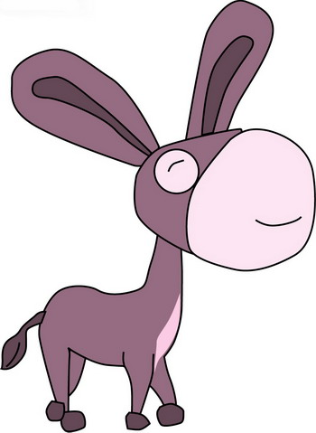

献给正在郁闷的人
#1 献给正在郁闷的人 作者：蓝天蓝 发表时间：2011-7-29 16:13:30
献给正在郁闷的人

一头驴，掉到了一个很深很深的废弃的陷阱里。主**衡一下，认为救它上来不划算，走了，只留下它孤零零的自己。每天，还有人往陷阱里面倒垃圾，驴很生气：自己真倒霉，掉到了陷阱里，主人不要他了，就连死也不让他死得舒服点，每天还有那么多垃圾扔在他旁边。
不要抱怨你的不如意，不要抱怨你的男人穷你的女人丑，不要抱怨你没有一个好爸爸，不要抱怨你的工作差，工资少，不要抱怨你空怀一身绝技没人赏识你，现实有太多的不如意，就算生活给你的是垃圾，你同样能把垃圾踩在脚底下，登上世界之巅。这个世界只在乎你是否在到达了一定的高度，而不在乎你是踩在巨人的肩膀上上去的，还是踩在垃圾上上去的。而事实上，踩在垃圾上上去的人更值得尊重。
年轻，没有失败！看驴生豪迈，不过从头再来......
［ 灯塔连珠 于 2011-7-29 17:29:20 时花20金币送鲜花一朵］
［ aabb 于 2011-7-29 20:17:11 时花20金币送鲜花一朵］
［ 弱惜 于 2011-7-30 8:34:20 时花20金币送鲜花一朵］
［ 微微一笑 于 2011-7-30 20:40:08 时花20金币送鲜花一朵］
［ 啊呆 于 2011-7-30 21:54:40 时花20金币送鲜花一朵］
#2 Re:献给正在郁闷的人 作者：冰之呢喃 发表时间：2011-7-30 17:12:14
赞一个！！！［ 微微一笑 于 2011-7-30 20:40:16 时花20金币送鲜花一朵］
［ 蓝天蓝 于 2011-7-30 22:24:50 时花20金币送鲜花一朵］
#3 Re:献给正在郁闷的人 作者：江南新绿 发表时间：2011-7-30 19:43:40
人不是驴，就算脚下垫也香蕉皮和西瓜皮，也增不了一分的高度。
［ 微微一笑 于 2011-7-30 20:40:22 时花20金币送鲜花一朵］
［ 蓝天蓝 于 2011-7-30 22:25:16 时花20金币送鲜花一朵］
#4 Re:献给正在郁闷的人 作者：月光公主 发表时间：2011-7-30 21:11:17

［ 蓝天蓝 于 2011-7-30 22:26:09 时花20金币送鲜花一朵］
#5 Re:献给正在郁闷的人 作者：嵯峨 发表时间：2011-7-31 1:48:54
现在就很郁闷。。。。。打开爱五子棋网一下子就看到这个帖子了。。。［ 蓝天蓝 于 2011-7-31 6:26:51 时花20金币送鲜花一朵］
［ 微微一笑 于 2011-7-31 8:35:51 时花20金币送鲜花一朵］
#6 Re:献给正在郁闷的人 作者：被感动的人 发表时间：2011-7-31 17:27:25
心静自然凉哈~